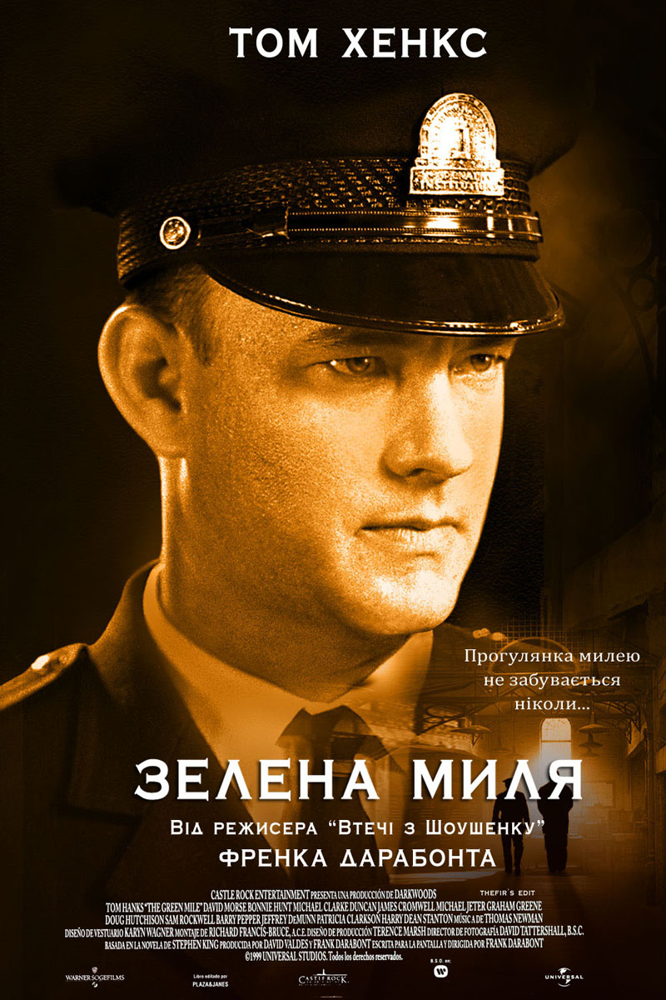

«Зелена миля» (англ. The Green Mile; 1999) — відома містична американська драма за однойменним романом Стівена Кінга. 4 номінації на «Оскар», 3 премії «Сатурн», ще 10 нагород і 23 номінації. Режисер — Френк Дарабонт.
Сюжет
Історія у фільмі викладається як спогад літнього чоловіка, мешканця будинку пристарілих Пола Еджкомба (Том Генкс), якому вже виповнилося 108 років. Він розповідає своїй подрузі Елейн Коннеллі (Єва Брент), як працював охоронцем у в'язниці.
У 1935 році Пол працює наглядачем у найбільш похмурому відділенні федеральної в'язниці «Холодна гора» (штат Луїзіана) — блок «Е», де утримуються ув'язнені, які очікують страти на електричному стільці. Підлога в блоці, по яким засуджені відправляються в останній шлях, зеленого кольору, звідси його прізвисько — «Зелена миля», або просто «Миля».
Одного разу у в'язницю потрапляє, засуджений до смерті за зґвалтування і вбивство двох дівчаток, величезний афроамериканець Джон Коффі (Майкл Кларк Дункан).
Незабаром після нього в тюрму потрапляє Білл Вортон на прізвисько «Дикий Білл», якого заарештували за грабіж і вбивство трьох осіб, включаючи вагітну жінку. Під час перевезення Білл прикидається «овочем», що притуплює пильність співробітників в'язниці і ледь не закінчується трагічно: Білл ледь не задушив ланцюгом охоронця. Далі Білл Вортон ще не раз демонструє свій шалений характер.
Тим часом Джон Коффі показує свої надприродні здібності, з допомогою яких він виліковує Еджкомба від інфекції сечового міхура. Потім Джон повертає до життя розчавленого мишеняти, а згодом зцілює дружину начальника в'язниці від неоперабельної пухлини мозку. Після чого Еджкомб починає сумніватися у винності Коффі.
У блоці «Е» з недавнього часу працює Персі Ветмор — боягузливий, підлий і жорстокий чоловік. Він знущається над ув'язненими і мріє узяти участь у страті і керувати нею. Ветмор впевнений у своїй вседозволеності і безкарності, оскільки є племінником дружини губернатора штату Луїзіана.
Від витівок Персі втомилася вся команда блоку «Е», і Пол пропонує Персі угоду: Персі один раз керує стратою, а потім звільняється з в'язниці. Той погоджується. Незадовго перед стратою Білл лякає Персі. Делакруа сміється над Персі і той хоче помститися. Під час страти Персі допускає зумисну помилку, не намочивши водою губку і тим самим прирікаючи Едуарда Делакруа на жахливу смерть (той фактично згорів живцем, а не помер від розряду електрики). Крім того, Персі перед стратою повідомив засудженому погані новини про його мишеня, не давши Делакруа померти спокійно.
Через кілька днів, отримавши від Коффі надприродний імпульс, Персі сходить з розуму, вихоплює револьвер, всаджує шість куль у «Дикого Білла» і відправляється в психлікарню. Тим часом Еджкомб дізнається про невинність Коффі (як виявилося, дівчаток вбив Білл Вортон), але Коффі просить Еджкомба не перешкоджати страти, так як дуже втомився від жахів навколишнього життя.
Невдовзі після страти Коффі вся команда блоку «Е» звільняється і переводиться у в'язниці для неповнолітніх, щоб не страчувати злочинців, а запобігати їх появі.
У фіналі фільму ми знову бачимо будинок пристарілих, де головний герой розповідає, що Джон Коффі подарував йому прокляття — довге життя. У невеликому сараї неподалік від будинку пристарілих живе донині вже неабияк постаріле мишеня страченого Делакруа — містер Джинглс, якому головний герой носить їжу. Йому виповнилося вже 66 років. Пол показує містера Джинглса своєї приятельки Елейн Коннеллі[1].
Нагороди
- 2000 — Премія «Сатурн»
- Найкращий фільм в жанрі екшн/пригоди/трилер
- Найкращий актор другого плану — Майкл Кларк Дункан
- Найкраща актриса другого плану — Патрісія Кларксон